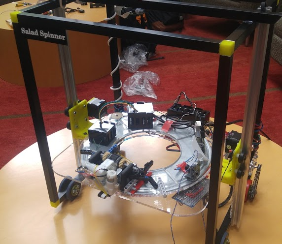
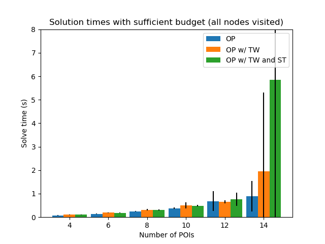
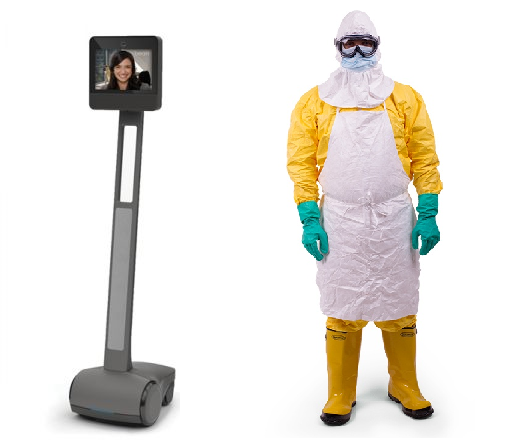
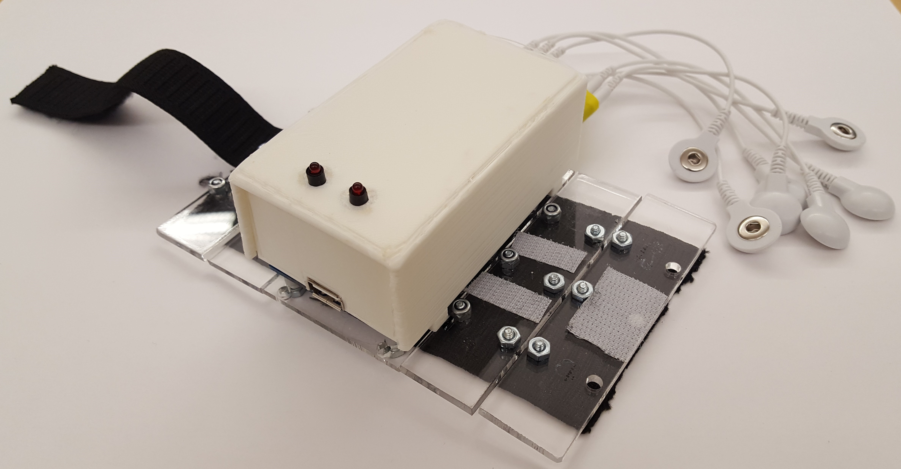

Highlighted Projects
This is a collection of research and personal projects. Be sure to check out my GitHub.Interactive Tic-Tac-Toe with a Kinova Robotic Arm
Status: Completed, demonstrated for Oregon State University's 150th anniversary celebration
This project used a Kinova robotic arm to play tic-tac-toe with a human user by manipulating cups on a table. This involved the use of the Realtime Robotics RapidPlan Motion Planning Accelerator board. By leveraging the ASIC implantation of motion planning on the accelerator board, we were able to achieve a responsive system that did not pose a safety risk to the human user.
Lettuce Jenga: Designing and Building a Robot to Play Jenga
Status: Completed
Applied Robotics Project for Oregon State University ROB 421/521 course. This robot was designed to and successfully played at least turns of Jenga, controlled by tele-operation. Design details and a 10 week walk-through of the project can be found on the project website.
The project website can be found here.
Modeling Mobile Robot Service as an Orienteering Problem
Status: Completed
This work describes the application of the Orienteering Problem (OP) to the problem of scheduling tasks for an indoor service robot. The robot must complete as many tasks as possible, while some tasks must be completed within limited time windows. We apply three variations of the basic Orienteering Problem to this scenario, with increasing levels of complexity. We implement a simulator to model points of interest scattered throughout an indoor environment, and compare the performance of the three OP variants on our generated agendas. Our results show that adding constraints to explicitly model the availability and duration of tasks improves the quality of generated plans, at the cost of increased constraint complexity and higher run-time.
More details on the project can be found here.
Patient Compliance Effects on Simulated Ebola Medical Care Delivery with a Telepresence Robot
Status: Published Oregon State University Graduate Thesis
Abstract: When treating highly infectious diseases, patient compliance with caregiver recommendations is crucial. Many patients who contract Ebola Virus Disease have symptoms including vomiting and severe diarrhea and die from the resulting dehydration if they do not drink enough fluids. Telepresence robots are useful in the context of Ebola treatment for performing patient interactions without further risk of contamination to care providers. As part of this Masters thesis, a study was conducted to determine if there is a difference in compliance when an individual is directed by someone using a telepresence robot compared to when they are directed by someone wearing Ebola-style personal protective equipment (PPE). This work is relevant to the compliance of patients in the treatment of Ebola for simple tasks such as reminding patients to eat and drink water where telepresence robots may be a suitable replacement for healthcare workers in the role of Ebola patient supervisor or supporter. Simple tasks are important to the survival of Ebola patients, who often perish from dehydration, and can be easily accomplished using a telepresence robot, whereas changed IV fluid or other medical tasks cannot be. The results show that there was no statistically significant difference between the subject group instructed by the person in the Ebola PPE and the subject group instructed by the person using the telepresence robot by performing single factor ANOVAs on the resulting data. Based on these results telepresence robots may be able to replace physically present healthcare workers for some tasks.
This project was my Master's Thesis under Dr. William D. Smart at Oregon State University's CoRIS Institute.
Wireless Smartphone Control using Electromyography and Automated Gesture Recognition
Status: Published EMBC 2018 Conference Paper
Abstract: In this paper, a wearable, wireless system is demonstrated using electromyography (EMG) signals for real-time control of a smartphone device. The system allows gesture-based control of a smartphone or tablet computer without physical contact, direct line of sight, or significant movement. Additionally, automated gesture detection is shifted to the smartphone, eliminating the need for robust computing hardware. The electronic system and gesture prediction algorithm are described, and measured results are presented and for multiple users. The system demonstrates a maximum true positive detection rate of 92\% for a trained user, using three distinct hand gestures. The EMG-based detection system serves as a proof-of-concept for providing wireless, gesture-based control of computer interfaces using low-cost consumer hardware.
This project began as a senior design project under Dr. Matthew Johnston in Fall 2017. I contributed to the hardware design and physical design components. I also acted as the project manager for our team.
ROS Wiki: Past, Present, and Future
ROS relies on having accessible, high quality, up-to-date documentation, and the wiki has served this need for many years. However, due to a combination of aging technology, a changing ecosystem, and a growing audience, it no longer satisfactorily achieves this goal. This project looked to present an in-depth analysis of the current wiki based on five years of analytics data, discuss how an updated wiki fits into the larger ecosystem of ROS documentation, and looked to unveil a modernized, backwards-compatible MediaWiki-based migration of the current wiki for community feedback. This was part of an NSF funded project.
Go Baby Go

Picture Credit: Sam Logan
Status: Published Oregon State University Undergraduate Honors Thesis
Abstract: This work describes the design and modification of a commercial children’s ride-on car to effectively collect usage data. The design is cheap and could be easily modified to gather more information. This will serve as a viable way to collect information about how motorized independence can help children with developmental differences. Children with developmental differences do not develop the same level of social, language, and cognitive skills as other children without mobility limitations. There is growing evidence that suggests the frequent use of a ride-on car (ROC) may help increase these skills. The increased mobility and independence that the ROC provides has been shown to do so in a few specific cases, although there have been no large-scale studies on these effects. Many children with developmental differences do not have access to affordable wheelchairs through insurance until they are at least 3 years of age. For many developmental skills, this is too late. Studies have shown that short-term ROC use for these children is feasible. This work seeks to explore one option to take data that could be correlated to improvements in fundamental movement skills for such studies in a cost-effective manner.
In collaboration with the Go Baby Go Project in OSU's Social Mobility Lab, I designed, built, and evaluated a system for data collection to track use of a modified commercial Ride-On Car for children with developmental hindrances.
Water-Level Detector with Online Data Publishing for Flood Monitoring
Status: Completed
Flooding is a concern for many communities around the world. The original purpose of this project was to monitor the water level in a culvert near Hollingsworth and Vose in South Corvallis. The water level in the culvert rises in proportion with the water level in Mary’s River. During storms, the water level can rise to a level significant enough to cause flooding. The website will display a warning when the water level reaches a critical level. This project incorporated students in electrical engineering and computer science in order to create an autonomous sensor reads the water level, specifically in a culvert in this case, and transmits the data over the internet to a server where it is stored. This information can be used to predict floods as well as other research purposes and is going to be publicly accessible. The system is built to be fully autonomous as long as it is connected to its power supply. The power supply is a solar cell connected to a battery. The data also does not have to be retrieved by retrieving the sensor box. Barring any maintenance issues that may arise, the system does not need to be managed and will continually send data for as long as is necessary. The data that is sent back includes a distance measurement of the water height, a temperature measurement, and a picture of the location taken by the unit’s camera The team encountered issues with the original sonar sensors, which were eventually deemed to be too unreliable near their maximum range to be used in this project. Different sensors were used in the final design with a slightly longer range. Power reliability was an issue before it was traced back to unstable battery connection.
A video for the project can be found here.